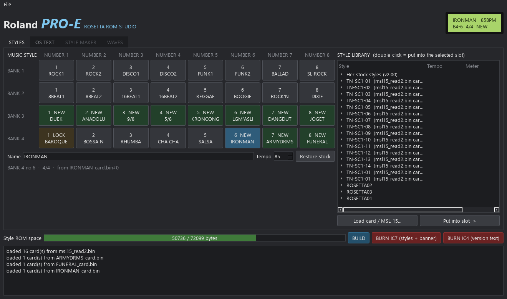

Roland PRO-E Mods: Rosetta OS with Juno mode and new effects
Custom firmware for the Roland PRO-E (Pro-E) Intelligent Arranger, the 1989 Italian arranger with an MT-32 voice board inside. A Juno mode, a moving Juno chorus on its reverb chip, and new styles from your MIDI files. Free, open source, tested on a real PRO-E.
JSW jamming the PRO-E: Juno chorus + the resonant filter on her reverb chip, recorded straight from her outputs (2:35).
What the mod adds
Juno modeMAKE JUNO turns any tone into saw + pulse + sub oscillator + detuned saw, then SAW / PULSE / SUB levels, pulse width, detune and range, like a Juno panel.
Juno chorusA moving stereo chorus built on the PRO-E's own Boss reverb chip: the full Juno-60 sweep (1.7-5.3 ms) at the Chorus I and II speeds, 128 positions in a click-free order, smoothed after the taps.
Delay, lo-fi, drive, flangerNew programs for the same chip: delay 40-495 ms with feedback, bit-crush lo-fi with a tone control, drive, flanger, plus Roland's plate.
Per-part effectsChoose which parts go into the effect: keep the drums dry and put the synth through the chorus.
SYNTH EDIT on the panel19 pages of tone editing on her own buttons and dial: filter, envelope, pitch envelope, LFO, waves, structures and the effects. You hear each change as you turn.
Live filterCutoff and resonance reach the notes you're holding, so filter sweeps work like a real knob.
Styles from MIDITurn a MIDI file into an arranger style with its own intro, fills and ending. It follows your left-hand chords.
Hidden styles8 styles that sat in the MSL-15 ROM with no button, now on BANK 3. Any TN-SC1 card style can go into an internal slot.
Every feature above is confirmed on hardware. The effects were measured on a real PRO-E through an audio interface.

Rosetta E-Style Studio: pick styles, set the OS text, build and burn to a T48.
How it works
Read your own chips on a programmer such as a T48 (IC7 style ROM, IC4 OS, and for the synth side IC28 and IC13 on the voice board). Keep the originals.
Run the build tools. They patch your dumps and check every change before writing the burn files.
Burn W27C040 / W27C512 chips and fit them, notch the right way. Put the originals back and she's a stock PRO-E again.
Styles and OS text need only IC7 and IC4, no board mods. SYNTH EDIT and Juno mode need the one-wire pin-31 mod. The new effects need IC13 and IC28 on the voice board.
Why it sounds like this
The PRO-E's voice board is Roland MT-32 / CM-32L hardware: the same LA synth chip as the D-50, and a Boss reverb DSP. LA tones were always "a sampled attack over a plain synth body". Juno mode gives that body what the chip could always do but no front panel offered. The chorus works by having the voice CPU step the reverb chip through 128 delay positions, in an order where each step changes one control byte only.